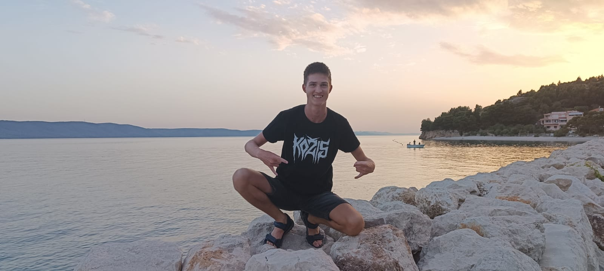

Matyáš Beran
Chodil jsem na MŠ a ZŠ Těrlicko. Aktuálně studuji na SPŠE Havířov, obor Řídicí systémy.
Ve volném čase se věnuji tvorbě her, programování a projektům s Arduino.
Mezi moje oblíbené hry patří War Thunder, The Elder Scrolls Online a Minecraft.
"Computer is like air conditioning - it becomes useless when you open windows."
Kontakt
Email: beranmaty12@gmail.com